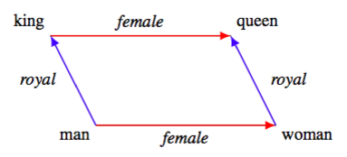

Word Embedding은..
단어 임베딩은 단어들을 고차원 벡터 공간에 매핑하는 과정입니다. 이렇게 변환된 벡터는 단어 간의 의미적 관계를 반영하도록 합니다. 비슷한 의미를 가진 단어들은 벡터 공간에서 가까운 위치에 놓이게 됩니다. 이를 통해 자연어 처리 모델은 단어 간의 유사성을 파악하고 문장이나 문서의 의미를 이해할 수 있습니다. 예를 들어, “왕 - 남자 + 여자 = 여왕”과 같은 관계를 벡터 연산을 통해 찾을 수 있습니다.

상기 예시의 시각화
기초적인 Word Embedding의 학습은 한 문장의 다음 단어(토큰)을 예측하는 Neural Network(이하 NN)을 학습하는 것입니다. 예를 들면 “사과/는” 이라는 토큰을 input으로 넣으면 “빨갛다”라는 토큰을 예측하는 방식입니다. 이렇게 학습된 NN에서 각 단어에 할당된 각 hidden layer들에 대한 가중들이 단어들을 벡터 공간에 매핑한 결과입니다. 위의 왕/남자/여왕/여자의 예시를 일반화할 경우, 각 단어들이 2개의 hidden layer에 연결되어 있고, 각 layer는 성별/직위를 뜻한다고 볼 수 있습니다.
Word2Vec은..
Word2Vec은 구글 연구자들이 개발한 단어 임베딩 기법입니다. Word2Vec은 큰 텍스트 데이터셋에서 단어들의 의미적 관계를 학습하는 데 사용되는 신경망 기반 모델입니다. Word2Vec에는 주로 두 가지 학습 방법이 사용됩니다:
- CBOW (Continuous Bag of Words): 이 방법은 주변 단어들을 사용하여 중심 단어를 예측하는 방식입니다. 즉, 주변 문맥을 기반으로 단어의 의미를 학습합니다. “사과는 빨갛다” 예시에서 “사과”와 “빨갛다”를 입력으로 사용하여 “는”을 출력으로 학습하는 방식입니다.
- Skip-gram: 이 방법은 중심 단어를 사용하여 주변 단어들을 예측하는 방식입니다. 이 방법은 주로 큰 데이터셋에 적합하며, 희소한 단어들에 대해서도 더 나은 임베딩을 생성합니다. 마찬가지의 예시를 활용하자면, 여기서는 “는”을 입력으로 사용하고, “사과”와 “빨갛다”를 출력으로 학습하는 방식입니다.
예제: Seoul - Korea + Japan = ?
library(tidyverse)
glove_6B_50d <- read_table("C:/Users/tranq/Desktop/glove.6B.50d.txt",
col_names = FALSE)
word_embeddings <- glove_6B_50d[, 1]
vector_embeddings <- as.matrix(glove_6B_50d[, -1])
get_word_vector <- function(word) {
word_index <- which(word_embeddings == word)
if (length(word_index) == 0) {
return(NULL)
}
return(vector_embeddings[word_index, ])
}
find_closest_word <- function(result_vector, n = 5) {
similarity_scores <- vector_embeddings %*% result_vector / (sqrt(rowSums(vector_embeddings^2)) * sqrt(sum(result_vector^2)))
closest_indices <- order(similarity_scores, decreasing = TRUE)[1:n]
return(word_embeddings[closest_indices,1])
}
seoul <- get_word_vector("seoul")
korea <- get_word_vector("korea")
japan <- get_word_vector("japan")
result_vector <- soeul - korea + japan
closest_word <- find_closest_word(result_vector, n = 5)
print(closest_word)# A tibble: 5 × 1
X1
<chr>
1 tokyo
2 osaka
3 japan
4 shanghai
5 seoul